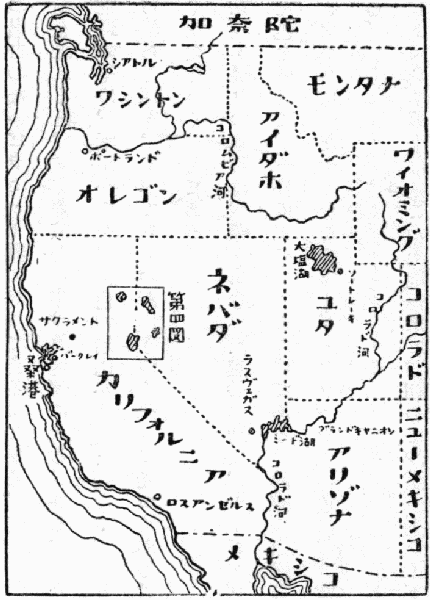
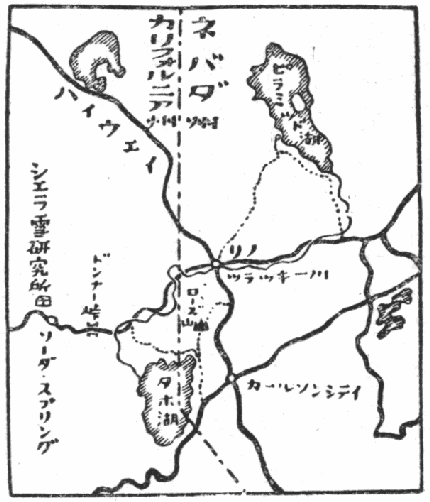

ネバダ通信は、まずネバダ大学の教授チャーチ博士の話から始めなければならない。チャーチ博士の名を初めて知ったのは、一九三六年だったかと思う。国際雪氷委員会のエヂンバラ総会の報告書が届いた時、その総裁としてのチャーチ博士を初めて知ったのである。
それから今年で十三年になる。その間戦争の期間を除いて、ずっと親しい交際をつづけてきた。ただしそれは手紙と論文とによる交際であって、会ったのは、今度が初めてなのである。
一九三九年だったかと思うが、ワシントンでこの国際雪氷委員会の第三回総会があった時、チャーチ博士から出席を希望された。しかし当時は今度の戦争の前で、世界中の空気も険悪であったし、私も療養中だったので、出席は断念した。その代りに、その前年初めて成功した人工雪の研究過程を、顕微鏡映画に撮り、英文のアナウンスを入れて、総会に送った。
これがチャーチ博士と急に親交を結ぶようになった機縁であった。映画は案外好評であったらしい。総会後チャーチ博士は、アメリカの方々の大学や研究所で、この映画を見せたそうである。そしてその
戦争中はもちろん交渉が絶えていたが、戦後にその委員会の再組織が企てられ、その機運が熟して、一九四八年の八月に、戦後初めての総会が、ノルウェイのオスロで開かれることになった。その会議には、私も招待されたのであるが、手続上の都合で中止した。チャーチ博士はそれをたいへん残念がって、
ところで十何年来の希望が達せられて、いよいよ今度初会見が実現することになった。七月十三日の午後二時四十五分。飛行機がリノ飛行場の上空で、着陸の姿勢をとった時は、われながら少々興奮したようであった。十三年来の「知己」に初めて会うのだから、少しくらい興奮してもまあ仕方がない。ネバダの真夏の強い日光が、
リノ滞在一週間のうち、ネバダ山脈中の雪研究所を訪ねた二日を除いては、毎日のように、暇さえあれば、チャーチ博士の研究室でぶらぶらしていた。そしていろいろ話を聞いているうちに、初めは冗談かと思ったくらいの珍しい事実を知った。というのは、チャーチ博士は、現在は世界的に「積雪水量測定の父」と呼ばれているが、ネバダ大学では、美術史の教授であったというのである。
ミシガン大学卒業後、
ところがこの美術史の教授には、冬の山登りという道楽があった。リノの近くにローズ山という美しい山がある。標高一万五百フィートというかなり高い山である。それがチャーチ博士の愛好した山であった。ローズ山及び附近の冬山を歩いているうちに、博士はこの山岳地帯の雪が、夏のネバダ州の一部を養う水となっていることに着目した。そして今日
採雪器などといっても、別にむつかしい器械ではなく、直径五センチくらい長さ一メートルほどのデュラルミンの筒である。それを何本も
この雪は春になるととけて、そのかなりの部分が川に流れ出す。それで春さきから夏にかけて川に流れ出て来る水量は、その流域全体の積雪水量できまるわけである。ところでアメリカの西半分は、年中ほとんど雨が降らない沙漠地帯または半沙漠地帯である。水資源というものはそのほとんど全部が、冬の間に山岳地帯に降る雪である。それで山岳地帯の積雪水量が多い年は、夏になって水に恵まれる。雪の少ない年は水が不足して大いに困る。それでアメリカの西部では、雪というものが、非常に大切な資源なのである。日本では雪といえば、すぐ雪害という言葉を連想するが、アメリカではその反対なのである。
「積雪水量測定の父」チャーチ博士の業蹟は、それでアメリカを初め、水に恵まれない世界各国では、かなり重視されているのである。十五年間にわたる国際雪氷委員会総裁としてのチャーチ博士の仕事は、この積雪水量測定に重点があった。そして昨年の八月、八十一歳の時、老齢の故をもって引退したのである。
七月十一日。バークレイのマッキンノン氏気付で、リノのネバダ大学から電報がきた。かねて約束の公開講演を十四日の晩にしたいが、都合はどうかときいてきたのである。もともと初めの予定は、十二日リノ着になっていたので、十四日なら文句はいえない。すぐ承知の返電を打っておいた。アラスカなどでぶらぶら遊んでいたのが悪かったのである。
ところが十二日はカリフォルニア大学に顔を出す手配をしていたので、とうとうきりきりのところ十三日の午後リノへ着いた。
不心得はこちらにあることはよく分ったが、いくら心臓が強くても、何を話していいかまだ考えてもいなかったので、この親切は全く身に
今度は「大学のお客」という形で、リンカーン・ホールという建物に泊ることになっていた。明日の準備をしたいからといって、
これには御本人の私が思わず吹き出した。ことの起りは、こうなのである。チャーチ博士から、ずっと以前に、東京の方へ手紙が来て、「君がこちらへ来たら、クラス講義の外に、夜の公開講演も頼みたい。パイ・ベーター・カッパの主催にするが、その時東洋芸術についても、一言か二言ふれて貰えないか」という意味のことが書いてあった。前にいったように、先生自身美術史の教授であったから、つい積雪水量測定と芸術とを混同する癖があるらしい。
初めにこの手紙を見た頃は、そんな癖があるとは夢にも知らなかった。夜の公開講演といえば、社交的な意味もあるので、あまり堅い話だけでも困るのだろう、何か一言東洋芸術らしい話を、まくらにでもつけたらいいのだろうと軽く考えた。それですぐ承知の返事を出しておいた。ところがこの新聞記事である。これには全く
こうなれば、もうどうにも手のつけようがない。なまじっかくよくよして、寝つきでも悪くなったら、かえって損をするだけである。明日眼を覚ませば、何とかなるだろうということにして、さっさと寝てしまった。
次の日、午前中は「応用科学に基礎科学を導入することの意味について」という題で、この頃少し考えていたことを話した。農学や工学などのいわゆる応用科学に、基礎科学を導入しようとする場合、とかく陥りやすい弊がある。むつかしい数学を用いたり、非常に精密な測定器械を使ったりすることを、「基礎科学の導入」と思う傾向がよくある。しかしそれは間違っている。それよりも現在目的とする応用科学の分野では、どういう要素を測定しなければならないかという点をはっきり捉え、その要素を測らねばならない。精密な器械を使っても、器械負けをしては何にもならない。まずこういう意味の話である。
ところで問題は、その必要な要素を測る器械というものが、必ずしも既に製造販売されているとは限らない点にある。それである場合には、測定器の考案も、自分でやらなければならない。その例として、北大物理教室の孫野助教授が考案した積算温度計を持ってきていたので、それを皆に見せた。例えば農学方面などでは、ある時刻の気温よりも、むしろある期間の気温を積算した値の方が大切な場合が多い。それで普通の寒暖計よりも、温度を加え得る測器、即ち積算温度計がもっと役に立つであろう。農業物理学というような学問を創立するには、こういう計器の考案からはいるべきであるというのが、その一例である。この積算温度計は、たいへん
午後は「大雪山の積雪水量調査」の話をした。昨年の四月、菅谷重二君が大雪山の忠別川流域について行なった調査の結果である。総司令部の特別の好意で、盛雪期、融雪期、残雪期の三回にわたって、全流域の航空写真を撮って貰うことが出来たので、従来のアメリカのやり方とはちょっとちがった調査が出来た。積雪水量調査の問題は、ここの大学が本場であるが、従来の方法は十年以上の統計を集め、統計による流出量の予報をするので、実際に全流域に積った雪の量を測定する試みはされていなかった。それをやるには、積雪が高度と森林密度との二つの要素の
クラス講義の方は何とか
この計画はうまく成功して、とにかく最後まで皆が少し勝手がちがうというような顔をして聴いていた。聴衆は百人くらいであった。うち六十人くらいがレディで、皆美しいドレスなので、演壇から見ると、花園を見ているようであった。
窮すれば通ずるという言葉があるが、そのとおりである。バークレイで電報を見て以来、やはり頭の底では考えていたものとみえて、いい案配に、寺田先生の物理学と、和辻（哲郎）さんの『風土』と、児島（喜久雄）さんの話とが、巧く頭に浮んできた。話しているうちに、それが不思議とつじつまが合った話になってくるので、というよりも自分でそういう気になったので、だんだん気楽になった。
もっとも芸術と科学との融合というのであるから、話はなるべく深遠でなければならない。それには
寺田先生の物理学というのは、こうである。現在の物理学は「測定」の上に立つ学問、即ち量の物理学である。それに対して、質の物理学、即ち形の物理学があっても、ちっとも不思議ではないというのである。もっともそういう物理学は、現在の意味では物理学ではない。そういう形の物理学がいくら発達しても、何の役にも立たないのであろう。原子爆弾も決して出来ないし、Ｂ29だって出来ない。しかし原子力の解放や飛行機の発達が人類のために「役に立つ」ことかどうかは、
この三つの話をこね合わせて、工業主義とヒューマニズムとに結びつけ、あまり分らない英語で一時間も話せば、どんな話だってひどく深遠に聞えるであろうというのが狙いであった。
カリフォルニア州は、太平洋に沿った細長い高原地帯を占めている。
この
ネバダの盆地は、左にシエラ・ネバダ、右にロッキイ山脈を擁した乾燥地帯で、大部分の土地は沙漠になっている。雨は夏の間はほとんど降らず、山岳地帯の冬の降雪が、年間降水量の大部分を占めている。
この山岳地帯の雪が、春から夏にかけて、とけて流れ出てくる。その水が、この沙漠地帯のわずかな部分をうるおしていて、その部分だけが耕地となり、また人間の住む土地となっている。シエラ・ネバダの雪がとけて流れ出たツラッキー川に沿って、狭い緑地帯があり、リノの町なども、この緑地帯の一部に属している。それで町は緑に
この地方の川は、あるいは沙漠の中で消え、あるいは小さい湖水に終っている。その湖水は海とは連絡の無い湖水であって、次第に干上りつつあるいわゆる塩湖である。中央アジア、タクラマカンの死の荒野の景色は、スフェン・ヘディンやスタインなどの紹介で、日本の読者には、ある意味では親しい土地となっている。しかしそれとよく似た景色であるところのネバダ州やユタ州の沙漠については、あまり知らない人が多い。アメリカといえば、天を摩すビルディングのいっぱい並んだ景色をすぐ思い浮べるものとみえて、「アメリカにも沙漠があるんですか」と驚く人もなくはない。
その一番の原因は、このアメリカの沙漠地帯は、既にある程度まで、人間の力で征服されているからであろう。わずかの水は出来るだけ利用され、沙漠の緑化は漸次に進み、鉄道が敷かれ、鋪装道路が沙漠を通じて縦横に通っている。それで旅行者は、沙漠をあまり身に沁みて、感じないのである。しかし最初の移住者が、幌馬車の隊列を組んで、この死の土地に入り込んできた時は、近年の探検家がゴビの沙漠に足をふみ入れた時と同じような辛酸をなめたのである。そしてネバダの沙漠については、それはわずか百年にも足らない近い過去のことである。
この沙漠の景色を見せようというので、ネバダ大学の数学の教授ビーズレイ博士が、ピラミッド湖へのドライヴに私を誘ってくれた。シエラ・ネバダの高地、六千二百フィートの標高のところに、万年雪のとけ込んだ美しいタホ湖がある。この湖から流れ出るツラッキー川が、リノの街を通って流れ、沙漠の中に細い緑地帯を作りながら、次第に細くなっていく。そして最後に、この出口のないピラミッド湖に終っているのである。
街を離れると、すぐ荒涼たる半沙漠地帯に入る。ゆるやかな起伏が、目の届く限り続いている荒野の果に、紫がかった白褐色の岩山がずっと連なっている。太陽は一点の雲もない蒼空にぎらぎらと輝き、すべてのものが
見渡す限りの荒野は、礫をまじえた熱砂の地で、セージ・ブラッシュの株が、かさかさに乾いた色を見せて、一杯に生えているだけである。油絵の白絵具にエメラルドグリーンをほんの少しばかり加えたようなこのセージ・ブラッシュの色は、非常に印象的である。三十マイルばかり走る。

ビーズレイ博士は「この土地へ来て、初めて沙漠へドライヴしようとした時は、カーの検査など、たいへんな準備をしたが、もうこの頃は馴れた」といっていた。こういう沙漠地帯の中でも、道路はすっかり鋪装され、坦々たる立派な道である。その上を、自動車は六十マイル以上の速度で、疾走して行く。歩いている人はもちろん一人もいない。エンジンに故障を起しても、この炎熱の道路を、一マイルと歩くことは困難であろう。
三十マイルばかり走ると、沙漠的の景観は、益々その荒涼たる姿を現わしてくる。セージ・ブラッシュの色も、次等に褐色がかって、半ば枯れたような色になる。そして数も次第に減って、一望累々たる石塊の荒野に変ってくる。
岩山は次第に近づいて、褐色、紫色、赤と、さまざまな色の岩が入り雑って、この世にない美しさを示している。そういう景色の中で、自動車が大きくカーヴして、わずかな切り取りを越えると、急に眼前にピラミッド湖が、その
この沙漠の中の湖は、周囲六十マイルもあろうかと思われるかなり大きい湖である。最初の強い印象は、その水の色である。紺色といっていいほどの濃い青色をしている。乾燥しきった周囲の岩山と荒野とは、一面に白茶けた景色である。その中で、この黒いばかりに濃い水の色が、非常に強く反影している。さらに奇異の感じを与えるのは、この湖の周囲に、白灰色の広い渚がぎらぎらと輝いている景観である。湖がかなり急速に干上りつつあることを示す景色である。対岸は岩山がけわしい崖になって、湖に入っている。その岩壁には、湖面に沿って、沈澱物の真白な線が見える。近年の湖面の低下を示すものなのである。

この湖には真中に島があり、その近くにピラミッド形の白い岩が、湖面から高く突き出ている。この岩が湖の名前の起りである。湖岸には、白い沈澱物の奇怪な形の「岩」が、たくさんある。ビーズレイ博士は、温泉作用によるものであろうといっていたが、いかにも不思議な構造の沈澱物である。
ネバダのこの地方には、あまり昔でない頃、大きい湖がたくさんあり、それが現在は干上りつつある。もっともその速度は、
荒涼たる沙漠、灼熱の岩山、濃藍の水。見渡す限り、およそ生物とは縁のない世界である。しかし、このもの凄じい景色の湖の中に、実はとんでもない魚が
タクラマカンの死の荒野は、久しい間の私の夢であったが、その立派な
冬の間の雪が、年間降水量の大部分を占めるというこのネバダの半沙漠地帯では、雪が大切な水資源である。それで冬期間の降水量、即ち雪の量が非常に大切な気象的要素である。チャーチ博士の積雪水量調査が、この土地で生まれたのは、立派な理由があるのである。
この積雪調査は、現在では、チャーチ博士の手を離れて、アメリカの気象台その他の協同事業になっている。そしてアメリカ西部の広漠たる地域にわたって、数十か所の雪の研究所が出来ていて、そこで測定した資料を集めて、コロラド州のデンバーにある西部雪協議会で、夏の河川水量の予報をしている。
その雪の研究所の代表的なものが、シエラ・ネバダの中にある。リノから六十マイルばかり離れ、カリフォルニア州にはいったすぐのところに、標高七千フィートを越すドンナー峠がある。その近くにある中部シエラ雪研究所が、その代表的なものである。
土曜日の晩を、このシエラ雪研究所で過さすべく、チャーチ博士は、私を土曜日の午後にリノを送り出した。研究所からの迎えの自動車は、ツラッキー川と不即不離の形で、ネバダ山脈をどんどん登って行った。六千フィートくらいまで上ると、景色は急に、乾燥性の高山地帯の姿を示してきた。芝生のような美しい草原の斜面に、小さい灌木が茂り、その間に白い大きい石が点在している景色である。そしてところどころに、大きい黒松と
ドンナー
研究所の主任は、大学で実験物理学を専攻したという理学士のハンセン君である。そして唯一人の若い助手と二人きりで、この研究所をあずかっているという。ハンセン君は、すぐ近くの住宅で、夫人と愛児と三人で住み、助手の人はただ一人で、この研究所に泊っているのだそうである。
今日はちょうど私が来たので、その助手の人は、サクラメントへ買物に行くから、一人で勝手に研究所で寝てくれという。二百マイル近くも離れているところを、まるで隣村みたような話をするのもいかにもアメリカらしい。
研究所は二階建で、下が研究室になり、二階が寝室及び居間になっている。研究室の方は、気象要素の観測は全部自記式になっているので、壁にいかめしい器械が一杯とりつけてある。日常の観測は、ほとんど手をかけないで出来るようになっている。それで夏の間はこの二人で十分らしい。もちろん冬になって、積雪調査が始まると、五人くらいの調査員をこの附近から集めて、仕事にかかるのだそうである。
二階の設備を見て、私は以前の私たちの野外研究とくらべて、感慨を新しくした。部屋は三室あって、各室に寝台が二つずつあり、外に寝椅子もあるので、七、八人は十分泊れるようになっている。この人界を隔絶したシエラ・ネバダの山奥まできても、便所は水洗式で、熱い湯はいつでも出、シャワーもいつでもとれるようになっている。洗面所には新しい石鹸がおいてあり、洗濯した真白い手拭が積んであった。
ハンセン君の住宅の方は、さらに完備している。山小屋風に作ってあるので、下は広い一室になっていて、その片隅に台所があり、つづいてすぐ食卓がおいてある。台所は都市で見るのと全く同じく、電気調理台と、電気冷蔵庫と、流し台とが、いずれも真白にぴかぴかと光っている。若い夫人は、もちろん女中などはいないので、一人でこの山奥で全部の家の仕事をして、子供を育てている。しかし爪にはちゃんと化粧をしていた。
乗物としては、乗用車一台、外にジープ一台、トラック一台、雪上車一台と、合計四台の自動車がおいてあった。夕食を二十マイルばかり離れたドンナー湖畔のホテルでとり、すぐ帰ってきて、夜おそくまでハンセン君の居間で話をした。
大分晩くなったので、木蔭の暗い道を研究所へ帰り、一人で寝た。電灯を消すと、淡い月の光が樹間を
翌朝は朝早くから、ハンセン君が、私をジープに乗せて、奥地の試験盆地を見せてくれた。四平方マイルくらいのまとまった集水区域があって、その流れの出口のところにこの研究所が建っているのである。
この盆地の景色は、さらに人界を離れたものであった。住人はもちろんなく、耕地もない。高山植物の美しく咲き揃った斜面を、ジープは道のないところをどんどん昇り降りする。ところどころに椴松の疎林が、
この盆地の中の一地点で、ハンセン君は、積雪水量の遠隔測定を、人工放射能を使ってやるという珍しい実験をしていた。地面の上に、コバルト六十番の人工放射性同位元素を設置し、その上の高いところに、ガイガー計数管をおいた装置である。コバルトから出る百十万電子ボルトのガムマ線が、積雪のために吸収される割合を測って、積雪水量を出すという方法である。
実験の巧みさももちろんであるが、それよりもこの仙界のような土地で、人工放射性元素や、ガイガー計数管を見ることの方が、余計に強い印象となって、私の頭の中に残った。
附記
最近の手紙で、このハンセン君がミネアポリスにあるミネソタ大学の方へ移ったという通知を受けた。ミネソタ大学には、近く大きい雪の綜合研究所が出来るので、目下方々から人を集めているが、ハンセン君もその仲間にはいったわけである。さすがにあのおとなしいハンセン夫人も、ネバダ山中の生活には、ほとほと閉口していたらしく、ちょっとそういう意味の言葉を洩らしたことがある。ミネアポリスへ移ることが出来て、夫人がどんなに喜んでいるか、十分想像が出来る。